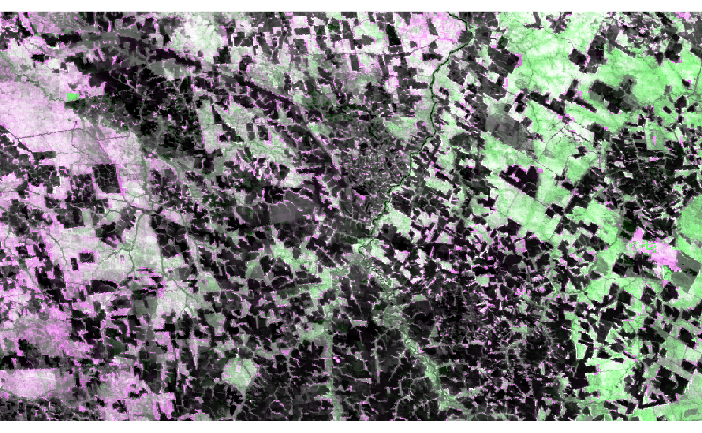
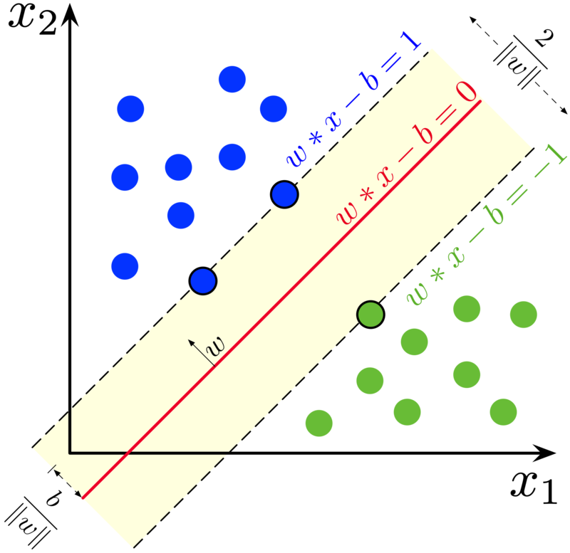
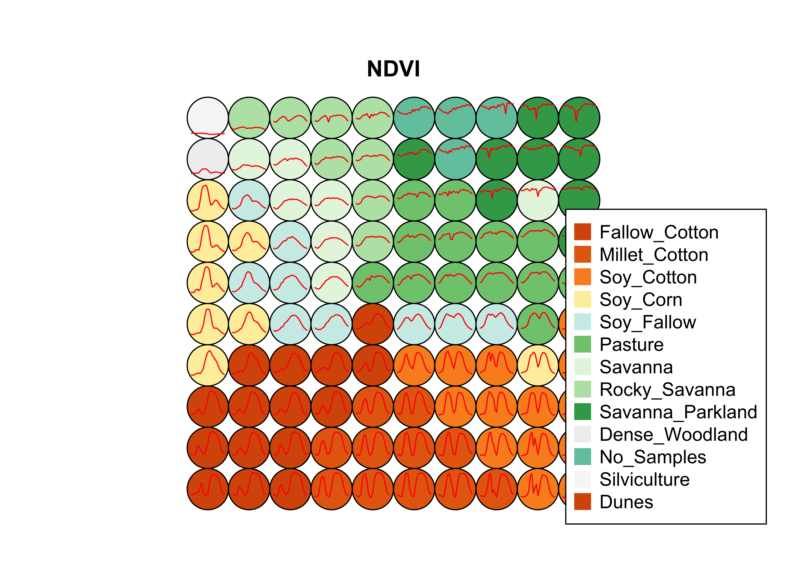
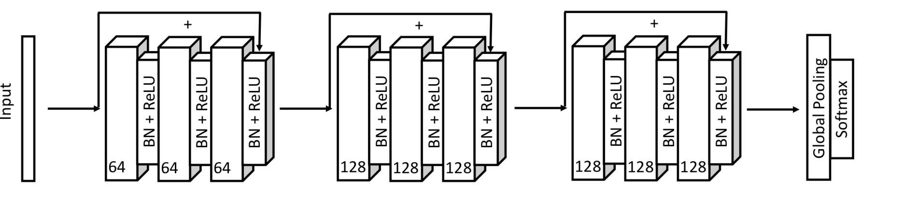
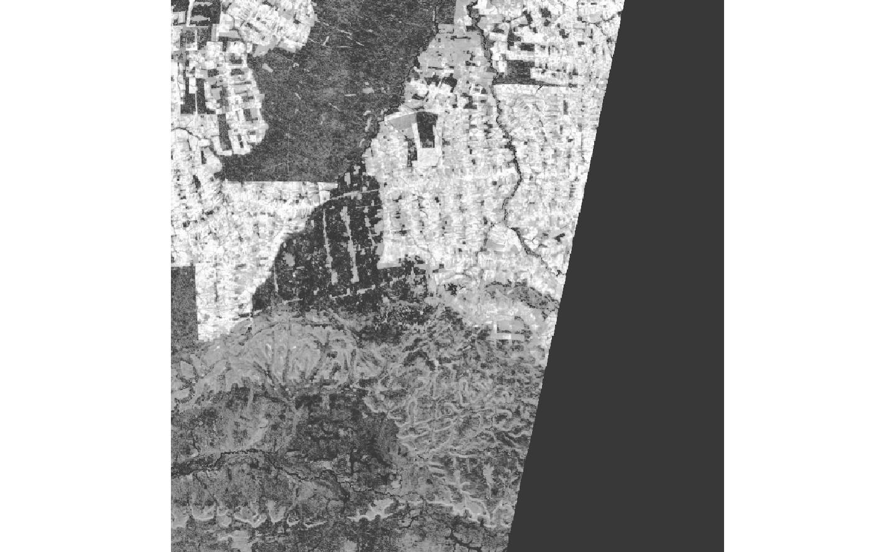
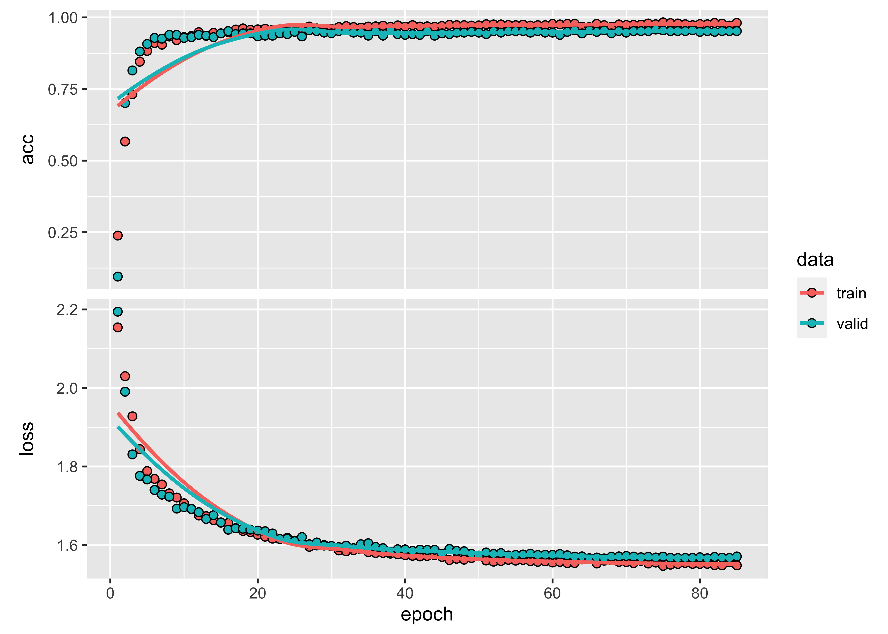
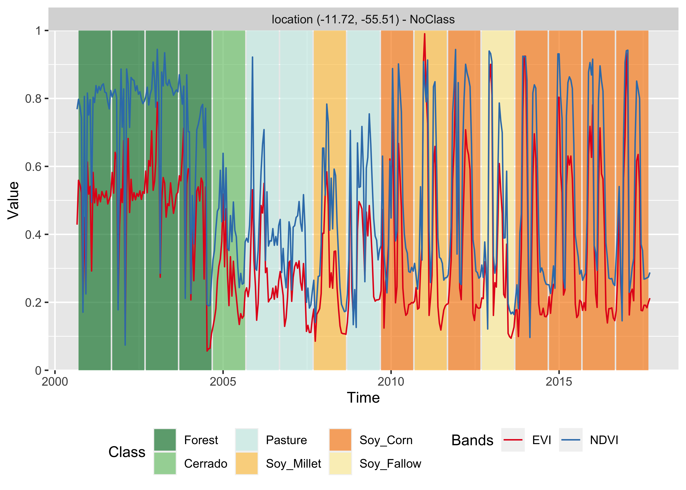
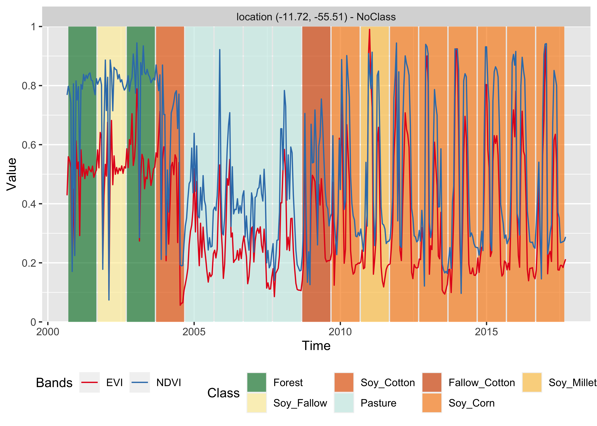

Chapter 5 Machine Learning for Data Cubes using the SITS package
Machine learning classification

The sits package supports for time series classification, preserving the temporal resolution of the input data. Instead of extracting metrics from time series segments, it uses all values of the time series. Our hypothesis is that building high-dimensional spaces using all values of the time series, coupled with advanced statistical learning methods, is a robust and efficient approach for land cover classification of large data sets. Thus, we use the full depth of satellite image time series to create large dimensional spaces for statistical classification.
The goal of a machine learning models is to approximate a function \(y = f(x)\) that maps an input \(x\) to a category \(y\). A model defines a mapping \(y = f(x;\theta)\) and learns the value of the parameters \(\theta\) that result in the best function approximation [1]. The difference between the different algorithms is the approach they take to build the mapping that classifies the input data.
The following machine learning methods are available in sits:
- Random forests (
sits_rfor()) - Support vector machines (
sits_svm()) - Extreme gradient boosting (
sits_xgboost()) - Multilayer perceptrons (
sits_mlp()) - Deep Residual Networks (
sits_resnet()) - 1D convolutional neural networks (
sits_tempcnn()) - Temporal attention encoders (
sits_tae()) - Lightweight temporal attention encoders (
sits_lighttae())
These methods can be subdivided in two types. The first group does not explicitly consider spatial or temporal dimensions; these algorithms treat time series as a vector in a high-dimensional feature space. They include random forests [2], support vector machines [3], extreme gradient boosting [4], and multilayer perceptrons [5]. The second group of models comprises deep learning methods designed to work with time series. Temporal relations between observed values in a time series are taken into account. From this kind of models, sits supports 1D convolution neural networks [6], residual 1D networks [7], and temporal attention-based encoders [8], [9]. In these algorithms, the order of the samples in the time series is relevant for the classifier.
Experience with sits shows that SVM, extreme gradient boosting and multilayer perceptron models tend to have inferior performance those using random forests and temporal deep learning. This difference derives from the temporal behavior of land use and land cover classes, where some dates capture more information than others. For example, in deforestation monitoring the dates associates to the actions of forest removal are more informative than earlier or later ones. The same situation occurs in crop mapping, when a large part of the variation is captured in a few dates. In these cases, classification methods which consider the temporal order of samples are more likely to capture the seasonal behavior of the image time series. Random forests methods that use individual measures as nodes in the decision trees can also capture particular events such as deforestation.
The following examples show how to train machine learning methods and apply it to classify a single time series. We use the set samples_matogrosso_mod13q1, containing time series samples from Brazilian Mato Grosso state, obtained from the MODIS MOD13Q1 product. It has 1,892 samples and 9 classes (Cerrado, Fallow_Cotton, Forest, Pasture, Soy_Corn, Soy_Cotton, Soy_Fallow, Soy_Millet, Soy_Sunflower). Each time series comprehends 12 months (23 data points) with 6 bands (“NDVI”, “EVI”, “BLUE”, “RED”, “NIR”, “MIR”). The samples are arranged along an agricultural year, starting in September and ending in August. The data set was used in the paper “Big Earth observation time series analysis for monitoring Brazilian agriculture” [10], and is available in the R package sitsdata. Please see the “Setup” section for instructions on how to obtain this pacakge.
The results should not be taken as indication of which method performs better. The most important factor for achieving a good result is the quality of the training data [11]. Experience shows that classification quality depends on the training samples and on how well the model matches these samples. For examples of ML for classifying large areas, please see the “Case Studies” chapter in this book and also the papers by the authors [10], [12]–[14].
Visualizing Sample Patterns
One useful way of describing and understanding the samples is by plotting them. A direct way of doing so is using the plot function, as discussed in the “Working with Time Series” chapter. A useful alternative is to estimate a statistical approximation to an idealized pattern based on a generalised additive models (GAM). A GAM is a linear model in which the linear predictor depends linearly on a smooth function of the predictor variables
\[ y = \beta_{i} + f(x) + \epsilon, \epsilon \sim N(0, \sigma^2). \]
The function sits_patterns() uses a GAM to predict a smooth, idealized approximation to the time series associated to the each label, for all bands. This function is based on the R package dtwSat[15], which implements the TWDTW time series matching method described in [16]. The resulting patterns can be viewed using plot.
# Estimate the patterns for each class and plot them
samples_matogrosso_mod13q1 %>%
sits_patterns() %>%
plot()
Figure 5.1: Patterns for the samples for Mato Grosso.
The resulting patterns provide some insights over the time series behavior of each class. The response of the Forest class is quite distinctive. They also shows that it should be possible to separate between the single cropping classes and the double cropping ones. There are similarities between the double-cropping classes (Soy_Corn, Soy_Millet, Soy_Sunflower and Soy_Sunflower) and between the Cerrado and Pasture classes. The subtle differences between class signatures provide hints to possible ways by which machine leaning algorithms might distinguish between classes. One example is the difference between the middle-infrared response during the dry season (May to September) to distinguish between the Cerrado and Pasture classes.
Common interface to machine learning and deep learning models
The SITS package provides a common interface to all machine learning models, using the sits_train() function. This function takes two mandatory parameters: the training data (samples) and the ML algorithm (ml_method). After the model is estimated, it can be used to classify individual time series or data cubes with sits_classify(). In what follows, we show how to apply each method for the classification of a single time series. Then, in the “Classification of Images in Data Cubes” we discuss how to classify data cubes.
Since sits is aimed at remote sensing users who are not machine learning experts, it provides a set of default values for all classification models. These settings have been chosen based on testing by the authors. Nevertheless, users can control all parameters for each model. Novice users can rely on the default values, while experienced ones can fine-tune model parameters to meet their needs. Model tuning is discussed at the end of this chapter.
When a set of time series organised as tibble is taken as input to the classifier, the result is the same tibble with one additional column (“predicted”), which contains the information on what labels are have been assigned for each interval. The results can be shown in text format using the function sits_show_prediction() or graphically using plot().
Random forests
The random forests model uses decision trees as its base model with refinements. When building the decision trees, each time a split in a tree is considered, a random sample of m features is chosen as split candidates from the full set of n features of the samples[17]. Each of these features is then tested; the one maximizing the decrease in a purity measure is used to build the trees. This criterion is used to identify relevant features and to perform variable selection. This decreases the correlation among trees and improves prediction performance. Classification performance depends on the number of trees in the forest as well as the number of features randomly selected at each node.

Figure 5.2: Random forests algorithm (source: Venkata Jagannath in Wikipedia - licenced as CC-BY-SA 4.0.)
SITS provides sits_rfor(), which uses the R randomForest package [18]; its main parameter is num_trees, which is the number of trees to grow with a default value 100. The model can be visualized using plot().
# Train the Mato Grosso samples with Random Forests model.
rfor_model <- sits_train(
samples = samples_matogrosso_mod13q1,
ml_method = sits_rfor(num_trees = 100)
)
# plot the most important variables of the model
plot(rfor_model)
Figure 5.3: Most important variables in random forests model.
The most important explanatory variables are the NIR (near infrared) band on date 17 (2007-05-25) and the MIR (middle infrared) band in date 22 (2007-08-13). The NIR value at the end of May captures the growth of the second crop for double cropping classes. Values of the MIR band at the end of the period (late July to late August) capture bare soil signatures to distinguish between agricultural classes and natural ones. This corresponds to summer time when the ground is drier and crops have been harvested.
# retrieve a point to be classified
point_mt_4bands <- sits_select(
data = point_mt_6bands,
bands = c("NDVI", "EVI", "NIR", "MIR")
)
# Classify using Random Forest model and plot the result
point_class <- sits_classify(
data = point_mt_4bands,
ml_model = rfor_model
)
plot(point_class, bands = c("NDVI", "EVI"))
Figure 5.4: Classification of time series using random forests.
The result shows that the area started out as a forest in 2000, it was deforested from 2004 to 2005, used as pasture from 2006 to 2007, and for double-cropping agriculture from 2009 onwards. They are consistent with expert evaluation of the process of land use change in this region of Amazonia.
Random forests are robust to outliers and able to deal with irrelevant inputs [19]. The method tends to overemphasize some variables because its performance tends to stabilize after a part of the trees are grown [19]. In cases where abrupt change takes place, such deforestation mapping, random forests (if properly trained) will emphasize the temporal instances and bands that capture such quick change.
Support Vector Machines
The support vector machine (SVM) classifier is a generalization of a linear classifier which finds an optimal separation hyperplane that minimizes misclassification [20]. Since a set of samples with \(n\) features defines an n-dimensional feature space, hyperplanes are linear \({(n-1)}\)-dimensional boundaries that define linear partitions in that space. If the classes are linearly separable on the feature space, there will be an optimal solution defined by the maximal margin hyperplane, which is the separating hyperplane that is farthest from the training observations[17]. The maximal margin is computed as the the smallest distance from the observations to the hyperplane. The solution for the hyperplane coefficients depends only on the samples that define the maximum margin criteria, the so-called support vectors.

Figure 5.5: Maximum-margin hyperplane and margins for an SVM trained with samples from two classes. Samples on the margin are called the support vectors. (source: Larhmam in Wikipedia - licensed as CC-BY-SA-4.0 ).
For data that is not linearly separable, SVM includes kernel functions that map the original feature space into a higher dimensional space, providing nonlinear boundaries to the original feature space. The new classification model, despite having a linear boundary on the enlarged feature space, generally translates its hyperplane to a nonlinear boundaries in the original attribute space. Kernels are an efficient computational strategy to produce nonlinear boundaries in the input attribute space; thus, they improve training-class separation. SVM is one of the most widely used algorithms in machine learning applications and has been applied to classify remote sensing data [3].
In sits, SVM is implemented as a wrapper of e1071 R package that uses the LIBSVM implementation [21], the sits package adopts the one-against-one method for multiclass classification. For a \(q\) class problem, this method creates \({q(q-1)/2}\) SVM binary models, one for each class pair combination and tests any unknown input vectors throughout all those models. The overall result is computed by a voting scheme.
The example below shows how to apply the SVM method for classification of time series using default values. The main parameters for the SVM are kernel which controls whether to use a non-linear transformation (default is radial), cost which measures the punishment for wrongly-classified samples (default is 10), and cross which sets the value of the k-fold cross validation (default is 10).
# Train a machine learning model for the mato grosso dataset using SVM
svm_model <- sits_train(
samples = samples_matogrosso_mod13q1,
ml_method = sits_svm()
)
# Classify using SVM model and plot the result
point_class <- sits_classify(
data = point_mt_4bands,
ml_model = svm_model
)
# plot the result
plot(point_class, bands = c("NDVI", "EVI"))
Figure 5.6: Classification of time series using SVM.
The SVM classifier is less stable and less robust to outliers than the random forests method. In this example, it tends to misclassify some of the data. In 2008, it is likely that the land cover was still “Pasture” rather than “Soy_Millet” as produced by the algorithm, while the “Soy_Cotton” class in 2012 is also inconsistent with the previous and latter classification of “Soy_Corn”.
Extreme Gradient Boosting
The boosting method is based on the idea of starting from a weak predictor and then improving performance sequentially by fitting a better model at each iteration. It starts by fitting a simple classifier to the training data, and using the residuals of the fit to build a predictor. Typically, the base classifier is a regression tree. Although both random forests and boosting use trees for classification, there are important differences. The performance of random forests generally increases with the number of trees until it becomes stable. Boosting trees improve on previous result by applying finer divisions that improve the performance [19]. However, the number of trees grown by boosting techniques has to be limited at the risk of overfitting.
Gradient boosting is a variant of boosting methods where the cost function is minimized by gradient descent. Extreme gradient boosting [4], called XGBoost, is an efficient approximation to the gradient loss function. Some recent papers show that it outperforms random forests for remote sensing image classificationJafarzadeh2021?. However, this result is not generalizable, since actual performance is controlled by the quality of the training data set.
In SITS, the XGBoost method is implemented by the sits_xbgoost() function, which is based on XGBoost R package and has five hyperparameters that require tuning. The sits_xbgoost() function takes the user choices as input to a cross validation to determine suitable values for the predictor.
The learning rate eta varies from 0.0 to 1.0 and should be kept small (default is 0.3) to avoid overfitting. The minimum loss value gamma specifies the minimum reduction required to make a split. Its default is 0; increasing it makes the algorithm more conservative. The max_depth value controls the maximum depth of the trees. Increasing this value will make the model more complex and more likely to overfit (default is 6). The subsample parameter controls the percentage of samples supplied to a tree. Its default is 1 (maximum). Setting it to lower values means that xgboost randomly collects only part of the data instances to grow trees, thus preventing overfitting. The nrounds parameter controls the maximum number of boosting interactions; its default is 100, which has proven to be enough in most cases. In order to follow the convergence of the algorithm, users can turn the verbose parameter on. In general, the results using the extreme gradient boosting algorithm are similar to the random forests method.
# Train a model for the mato grosso dataset using XGBOOST
# The default parameters are those of the "xgboost" package
xgb_model <- sits_train(
samples = samples_matogrosso_mod13q1,
ml_method = sits_xgboost(verbose = 0)
)
# Classify using SVM model and plot the result
point_class <- sits_classify(
data = point_mt_4bands,
ml_model = xgb_model
)
plot(point_class, bands = c("NDVI", "EVI"))
Figure 5.7: Classification of time series using XGBoost.
Deep learning using multilayer perceptrons
To support deep learning methods, sits uses the torch R package, which takes the Facebook torch C++ library as a back-end. Machine learning algorithms that use the R torch package are similar from those developed using PyTorch. Converting image time series algorithms developed in PyTorch to be using in sits is straightforward. Please see the chapter on “Extensibility” for guidance on how to include new deep learning algorithms in sits.
The simplest deep learning method is multilayer perceptrons (MLPs), which are feedforward artificial neural networks. A MLP consists of three kinds of nodes: an input layer, a set of hidden layers and an output layer. The input layer has the same dimension as the number of the features in the data set. The hidden layers attempt to approximate the best classification function. The output layer makes a decision about which class should be assigned to the input.
In sits, users build MLP models using sits_mlp(). Since there is no established model for generic classification of satellite image time series, designing MLP models requires parameter customization. The most important decisions are the number of layers in the model and the number of neurons per layer. These values are set by the layers parameters, which is a list of integer values. The size of the list is the number of layers and each element of the list indicates the number of nodes per layer.
The choice of the number of layers depends on the inherent separability of the data set to be classified. For data sets where the classes have different signatures, a shallow model (with 3 layers) may provide appropriate responses. More complex situations require models of deeper hierarchy. The user should be aware that some models with many hidden layers may take a long time to train and may not be able to converge. The suggestion is to start with 3 layers and test different options of number of neurons per layer, before increasing the number of layers.
MLP models also need to include the activation function. The activation function of a node defines the output of that node given an input or set of inputs. Following standard practices [1], we use the relu activation function.
Users can also define the optimization method (optimizer), which defines the gradient descent algorithm to be used. These methods aim to maximize an objective function by updating the parameters in the opposite direction of the gradient of the objective function [22]. Based on experience with image time series, we recommend that users start by using the default method provided by sits, which is the optimizer_adamw method from package torchopt. Please refer to the torchopt package for additional information.
Another relevant parameter is the list of dropout rates (dropout). Dropout is a technique for randomly dropping units from the neural network during training [23]. By randomly discarding some neurons, dropout reduces overfitting. Since the purpose of a cascade of neural nets is to improve learning as more data is acquired, discarding some neurons may seem a waste of resources. In practice, dropout prevents an early convergence to a local minimum [1]. We suggest users experiment with different dropout rates, starting from small values (10-30%) and increasing as required.
The following example shows how to use sits_mlp(). The default parameters for have been chosen based on a modified verion of [24], which proposes the use of multilayer perceptrons as a baseline for time series classification. These parameters are: (a) Three layers with 512 neurons each, specified by the parameter layers; (b) Using the “relu” activation function; (c) dropout rates of 40%, 30%, and 20% for the layers; (d) the “optimizer_adamw” as optimizer (default value); (e) a number of training steps (epochs) of 100; (f) a batch_size of 64, which indicates how many time series are used for input at a given steps; and (g) a validation percentage of 20%, which means 20% of the samples will be randomly set side for validation.
In our experience, if the training dataset is of good quality, using 3 to 5 layers is a reasonable compromise. Further increase on the number of layers will not improve the model. To simplify the output generation, the verbose option has been turned off. The default value is “on”. After the model has been generated, we plot its training history. In this and in the following examples of using deep learning classifiers, both the training samples and the point to be classified are filtered with sits_whittaker() with a small smoothing parameter (lambda = 0.5). Since deep learning classifiers are not as robust as Random Forest or XGBoost, the right amount of smoothing improves their detection power in case of noisy data.
# train a model for the Mato Grosso data using an MLP model
# this is an example of how to set parameters
# first-time users should test default options first
mlp_model <- sits_train(
samples = samples_matogrosso_mod13q1,
ml_method = sits_mlp(
layers = c(512, 512, 512),
dropout_rates = c(0.40, 0.30, 0.20),
epochs = 100,
batch_size = 64,
verbose = FALSE,
validation_split = 0.2
)
)
# show training evolution
plot(mlp_model)
Figure 5.8: Evolution of training accuracy of MLP model.
Then, we classify a 16-year time series using the multilayer perceptron model.
# Classify using DL model and plot the result
point_mt_6bands %>%
sits_select(bands = c("NDVI", "EVI", "NIR", "MIR")) %>%
sits_classify(mlp_model) %>%
plot(bands = c("NDVI", "EVI"))
Figure 5.9: Classification of time series using MLP.
In theory, multilayer perceptron model is able to capture more subtle changes than the random forests and XGBoost models. In this specific case, the result is similar to the them. Although the model mixes the “Soy_Corn” and “Soy_Millet” classes, the distinction between their temporal signatures is quite subtle. Also in this case, this suggests the need to improve the number of samples. In this examples, the MLP model shows an increase in the sensitivity compared to previous models. We recommend that the users compare different configurations, since the MLP model is sensitive to changes in its parameters.
Temporal Convolutional Neural Network (TempCNN)
Convolutional neural networks (CNN) are a variety of deep learning methods where a convolution filter (sliding window) is applied to the input data. In the case of time series, a 1D CNN works by applying a moving window to the series. Using convolution filters is a way to incorporate temporal autocorrelation information in the classification. The result of the convolution is another time series. Russwurm and Körner [25] state that the use of 1D-CNN for time series classification improves on the use of multilayer perceptrons, since the classifier is able to represent temporal relationships; also, the convolution window makes the classifier more robust to moderate noise, e.g. intermittent presence of clouds.
The use of 1D CNNs for satellite image time series classification is proposed by Pelletier et al [6]. The TempCNN architecture has three 1D convolutional layers, and a final softmax layer for classification (see figure). The authors use a combination of different methods to avoid overfitting and reduce the vanishing gradient effect, including dropout, regularization, and batch normalisation. In the tempCNN paper [6], the authors compare favorably their model with the Recurrent Neural Network proposed by Russwurm and Körner [26] for land use classification. The figure below shows the architecture of the tempCNN model.

Figure 5.10: Structure of tempCNN architecture (source: Pelletier et al.(2019))
The function sits_tempcnn() implements the model. The parameter cnn_layers controls the number of 1D-CNN layers and the size of the filters applied at each layer; the default values are three CNNs with 128 units. The parameter cnn_kernels indicates the size of the convolution kernels; the default are kernels of size 7. Activation for all 1D-CNN layers uses the “relu” function. The dropout rates for each 1D-CNN layer are controlled individually by the parameter cnn_dropout_rates. The validation_split controls the size of the test set, relative to the full data set. We recommend to set aside at least 20% of the samples for validation.
library(torchopt)
# train a machine learning model using tempCNN
tempcnn_model <- sits_train(
samples_matogrosso_mod13q1,
sits_tempcnn(
optimizer = torchopt::optim_adamw,
cnn_layers = c(128, 128, 128),
cnn_kernels = c(7, 7, 7),
cnn_dropout_rates = c(0.2, 0.2, 0.2),
epochs = 100,
batch_size = 64,
validation_split = 0.2,
verbose = FALSE
)
)
# show training evolution
plot(tempcnn_model)
Figure 5.11: Training evolution of TempCNN model.
Then, we classify a 16-year time series using the TempCNN model.
# Classify using TempCNN model and plot the result
class <- point_mt_6bands %>%
sits_select(bands = c("NDVI", "EVI", "NIR", "MIR")) %>%
sits_classify(tempcnn_model) %>%
plot(bands = c("NDVI", "EVI"))
Figure 5.12: Classification of time series using TempCNN.
The result has important differences from the previous ones. The TempCNN model indicates the “Soy_Cotton” class as the most likely one in 2004. While this result is likely to be wrong, it shows that the time series for year 2004 is different from those of “Forest” and “Pasture” classes. One possible explanation is that there was forest degradation in 2004, leading to a signature that is a mix of forest and bare soil. In this case, users could consider improving the training data by including samples that represent forest degradation. In our experience, TempCNN models are a reliable way for classifying image time series [27]. Recent work which compares different models also provides evidence of that TempCNN models have satisfactory behavior, especially in the case of crop classes [9].
Residual 1D CNN Networks (ResNet)
The Residual Network (ResNet) is a 1D convolution neural network (CNN) proposed by Wang et al. [24], based on the idea of deep residual networks for 2D image recognition [28]. The ResNet architecture is composed of 11 layers, with three blocks of three 1D CNN layers each (see figure below). Each block corresponds to a 1D CNN architecture. The output of each block is combined with a shortcut that links its output to its input, called a “skip connection”. The purpose of combining the input layer of each block with its output layer (after the convolutions) is to avoid the so-called “vanishing gradient problem”. This issue occurs in deep networks as he neural network’s weights are updated based on the partial derivative of the error function. If the gradient is too small, the weights will not be updated, stopping the training[29]. Skip connections aim to avoid vanishing gradients from occurring, allowing deep networks to be trained.

Figure 5.13: Structure of ResNet architecture (source: Wang et al.(2017)).
In sits, the Residual Network is implemented using the sits_resnet() function. The default parameters are those proposed by Wang et al. [24], as implemented by Fawaz et al.[30]. The first parameter is blocks, which controls the number of blocks and the size of filters in each block. By default, the model implements three blocks, the first with 64 filters and the others with 128 filters. Users can control the number of blocks and filter size by changing this parameter. The parameter kernels controls the size the of kernels of the three layers inside each block. We have found out that it is useful to experiment a bit with these kernel sizes in the case of satellite image time series. The default activation is “relu”, which is recommended in the literature to reduce the problem of vanishing gradients. The default optimizer is optim_adamw, available in package torchopt.
# train a machine learning model using ResNet
resnet_model <- sits_train(
samples_matogrosso_mod13q1,
sits_resnet(
blocks = c(64, 128, 128),
kernels = c(7, 5, 3),
epochs = 100,
batch_size = 64,
validation_split = 0.2,
verbose = FALSE
)
)
# show training evolution
plot(resnet_model)
Figure 5.14: Training evolution of ResNet model.
Then, we classify a 16-year time series using the ResNet model. The behaviour of the ResNet model is similar to that of TempCNN, with more variability.
# Classify using DL model and plot the result
class <- point_mt_6bands %>%
sits_select(bands = c("NDVI", "EVI", "NIR", "MIR")) %>%
sits_classify(tempcnn_model) %>%
plot(bands = c("NDVI", "EVI"))
Figure 5.15: Classification of time series using ResNet.
Attention-based models
Attention-based models have become one of the most used deep learning architectures for problems that involve sequential data inputs, e.g., text recognition and automatic translation. The general idea is that in applications such as language translation not all inputs are alike. Consider the English sentence “Look at all the lonely people” and its Portuguese translation “Olhe para todas as pessoas solitárias”. A good translation system needs to relate the words “look” and “people” as the key parts of this sentence and to ensure such link is captured in the translation. A specific type of attention models, called transformers, enables the recognition of such complex relationships between input and output sequences [31].
The basic structure of transformers is the same as other neural network algorithms. They have an encoder that transforms the input textual values into numerical vectors, and a decoder that processes these vectors and provides suitable answers. The difference is on how the values are handled internally. In multilayer perceptrons (MLP), all inputs are treated equally at first; based on iterative matching of training and test data, the backpropagation technique feeds information back to the initial layers to identify the most relevant combination of inputs that produces the best output. In convolutional nets (CNN), input values that are close in time (1D) or space (2D) are combined to produce higher-level information that helps to distinguish the different components of the input data. For text recognition, the initial choice of deep learning studies was to use recurrent neural networks (RNN) that handle input sequences sequentially. However, neither MLPs, nor CNNs or RNNs have been able to capture the structure of complex inputs such as natural language. The success of transformer-based solutions accounts for substantial improvements in natural language processing.
The two main differences between transformer models and other algorithms are the use of positional encoding and self-attention. Positional encoding assigns an index to each input value which ensures that the relative locations of the inputs are maintained throughout the learning and processing phases. Self-attention works by comparing every word in the sentence to every other word in the sentence, including itself. In this way, it learns contextual information about the relation between the words. This conception has been validated in large language models such as BERT [32] and GPT-3 [33].
The application of attention-based models for satellite image time series analysis is proposed by Garnot et [8] and Russwurm and Körner [9]. The intuition behind the use of self-attention to image time series is to identify which observations are most relevant for classification. The first model proposed by Garnot and co-authors was a full transformer-based model [8]. Considering that image time series classification is a easier task that natural language processing, Garnot et al [34] also propose a simplified version of the full transformer model. This simpler model uses a reduced way to compute the attention matrix, reducing time for training and classification without loss of quality of result.
In sits, the full transformer-based model proposed by Garnot and co-authors [8] is implemented using the sits_tae() function. The default parameters are those proposed by the authors. The default optimizer is the same is optim_adamw, available in package torchopt.
# train a machine learning model using TAE
tae_model <- sits_train(
samples_matogrosso_mod13q1,
sits_tae(
epochs = 150,
batch_size = 64,
optimizer = torchopt::optim_adamw,
validation_split = 0.2,
verbose = FALSE
)
)
# show training evolution
plot(tae_model)
Figure 5.16: Training evolution of Temporal Self-Attention model.
Then, we classify a 16-year time series using the TAE model.
# Classify using DL model and plot the result
class <- point_mt_6bands %>%
sits_select(bands = c("NDVI", "EVI", "NIR", "MIR")) %>%
sits_classify(tae_model) %>%
plot(bands = c("NDVI", "EVI"))
Figure 5.17: Classification of time series using TAE.
In sits, the simplified transformer-based model proposed by Garnot and co-authors [8] is implemented using the sits_lighttae() function. The default optimizer is the same is optim_adamw, available in package torchopt. The most important parameter to be set is the learning rate lr. Values ranging from 0.001 to 0.005 should produce reasonable results. See also the section below on model tuning.
# train a machine learning model using TAE
ltae_model <- sits_train(
samples_matogrosso_mod13q1,
sits_lighttae(
epochs = 150,
batch_size = 64,
optimizer = torchopt::optim_adamw,
opt_hparams = list(lr = 0.001),
validation_split = 0.2
)
)
# show training evolution
plot(ltae_model)
Figure 5.18: Training evolution of Lightweight Temporal Self-Attention model.
Then, we classify a 16-year time series using the LightTAE model.
# Classify using DL model and plot the result
class <- point_mt_6bands %>%
sits_select(bands = c("NDVI", "EVI", "NIR", "MIR")) %>%
sits_classify(ltae_model) %>%
plot(bands = c("NDVI", "EVI"))
Figure 5.19: Classification of time series using LightTAE.
The behaviour of both sits_tae() and sits_lighttae() is similar to that of sits_tempcnn(). It points out the possible need for more classes and training data to better represent the transition period between 2004 and 2010. One possibility is that the training data associated to the Pasture class is only consistent with the time series between the years 2005 to 2008. However, the transition from Forest to Pasture in 2004 and from Pasture to Agriculture in 2009-2010 is subject to uncertainty, since the classifiers do not agree on the resulting classes. In general, the deep learning temporal-aware models are more sensitive to class variability than random forests and extreme gradient boosters.
Model tuning
Model tuning is an important step in machine learning classification, to enable a better fir of the method to the training data. Learning algorithms have a set of internal configuration called hyperparameters, which control the convergence of the algorithm and minimize the classification error. In practice, an unsuitable choice of hyperparameters can have a detrimental effect on the quality of the results.
Deep learning algorithms try to find the optimal point that represents the best value of the prediction function that, given an input \(X\) of data points, predicts the result \(Y\). In our case, \(X\) is a multidimensional time series and \(Y\) is a vector of probabilities for the possible output classes. For complex situations, the best prediction function is time consuming to estimate. For this reason, deep learning methods rely on gradient descent methods to speed up predictions and converge faster than an exhaustive search [35]. All gradient descent methods use an optimization algorithm that is adjusted with hyperparameters such as the learning rate and regularization rate [36]. The learning rate controls the numerical step of the gradient descent function and the regularization rate controls model overfitting. Adjusting these values to an optimal setting requires the use of model tuning methods.
To reduce the learning curve, sits provides default values for all machine learning and deep learning methods described above. These defaults ensure a reasonable baseline performance. More experienced users may want to refine model hyperparameters, especially for more complex models such as sits_lighttae() or sits_tempcnn(). To that end, the package provides the sits_tuning() function.
The simplest approach to model tuning is would be to run a grid search; this involves defining a range for each hyperparameter and then testing all possible combinations. This approach leads to a combinational explosion and thus is not recommended. Instead, Bergstra and Bengio [37] propose to use randomly chosen trials. In their paper, the authors show that random trials are more efficient than grid search trials, allowing the selection of adequate hyperparameters at a fraction of the computational cost. The sits_tuning() function follows Bergstra and Bengio [37] and uses a random search on the chosen hyperparameters.
Since gradient descent plays a key role in deep learning model fitting, developing optimizers is an important topic of research [38]. A large number of optimizers have been proposed in the literature, and recent results are reviewed by Schmidt et al [Schmidt2021]. For general deep learning applications, the Adam optimizer [39] provides a good baseline and reliable performance. For this reason, Adam is the default optimizer in the R torch package. However, experiments with image time series show that other optimizers may have better performance for the specific problem of land use classification. For this reason, the authors developed a separate R package, called torchopt that includes a number of recently proposed optimizers, including Adamw [40], Madgrad [41] and Yogi [42]. Based on our experiments, we have selected Adamw as the default optimizer for deep learning methods. Using the sits_tuning() function allows testing these and other optimizers available in torch and torch_opt packages.
The sits_tuning() function takes the following parameters:
samples- Training data set to be used by the model.samples_validation(optional) - If available, this data set contains time series to be used for validation. If missing, the next parameter will be used.validation_split- Ifsamples_validationis not used, this parameter defines the proportion of time series in the training data set to be used for validation (default is 20%).ml_method()- Deep learning method (eithersits_mlp(),sits_tempcnn(),sits_resnet(),sits_tae()orsits_lighttae())params- defines the optimizer and its hyperparameters by calling thesits_tuning_hparams()function, as shown in the example below.trials- number of trials to run the random search.multicores- number of cores to be used for the procedure.progress- show progress bar?
The sits_tuning_hparams() function inside sits_tuning() allows users to define optimizers and their hyperparameters including lr (learning rate), eps (controls numerical stability) and weight_decay (controls overfitting). The default values for eps and weight_decay in all sits deep learning functions are 1.0e-08 and 1.0e-06, respectively. The default lr for sits_lighttae() and sits_tempcnn() is 0.005, and for sits_tae() and sits_resnet() is 0.001. Users have different ways to randomize the hyperparameters, including: choice() (a list of options), uniform (a uniform distribution), randint (random integers from a uniform distribution), normal(mean, sd) (normal distribution), beta(shape1, shape2)(beta distribution). These options allow extensive combination of hyperparameters.
In the example, the sits_tuning() function finds good hyperparameters to train the sits_lighttae() method for the Mato Grosso data set. It tests 100 combinations of learning rate and weight decay for the Adamw optimizer. To randomize the learning rate, it uses a beta distribution with parameters 0.35 and 10, which allows for variation between about 0.2 and 1.0e-00; for the weight decay, the beta distribution with parameters 0.1 and 2 generates values roughly between 1 and 1.0e-24.
tuned <- sits_tuning(
samples = samples_matogrosso_mod13q1,
ml_method = sits_lighttae(),
params = sits_tuning_hparams(
optimizer = torchopt::optim_adamw,
opt_hparams = list(
lr = beta(0.35, 10),
weight_decay = beta(0.1, 2)
)
),
trials = 100,
multicores = 6,
progress = FALSE
)The result is a tibble with different values of accuracy, kappa, decision matrix, and hyperparameters. The 10 best results obtain accuracy values between 0.976 and 0.958, as shown below. The best result is obtained by a learning rate of 0.0011 and an weight decay of 2.14e-05,
# obtain accuracy, kappa, lr and weight decay for the 10 best results
# hyperparameters are organized as a list
hparams_10 <- tuned[1:10, ]$opt_hparams
# extract learning rate and weight decay from the list
lr_10 <- purrr::map_dbl(hparams_10, function(h) h$lr)
wd_10 <- purrr::map_dbl(hparams_10, function(h) h$weight_decay)
# create a tibble to display the results
best_10 <- tibble::tibble(
accuracy = tuned[1:10, ]$accuracy,
kappa = tuned[1:10, ]$kappa,
lr = lr_10,
weight_decay = wd_10
)
# print the best combination of hyperparameters
best_10#> # A tibble: 10 × 4
#> accuracy kappa lr weight_decay
#> <dbl> <dbl> <dbl> <dbl>
#> 1 0.976 0.972 0.00117 2.14e- 5
#> 2 0.971 0.965 0.00125 2.07e- 4
#> 3 0.968 0.962 0.000281 2.70e- 2
#> 4 0.966 0.959 0.000418 1.54e- 2
#> 5 0.963 0.956 0.000432 1.76e- 6
#> 6 0.960 0.953 0.000263 2.35e- 4
#> 7 0.960 0.953 0.000254 3.13e- 3
#> 8 0.958 0.950 0.000973 1.35e- 2
#> 9 0.958 0.949 0.000694 8.95e-15
#> 10 0.958 0.950 0.000428 1.09e- 1For large data sets, the tuning process is time consuming. Despite this cost, it is recommended for achieving the best performance. In general, tuning hyperparameters for models such as sits_tempcnn() and sits_lighttae() will result in a slight performance improvement over the default parameters on overall accuracy. The performance gain will be stronger in the less well represented classes, where significant gains in producer’s and user’s accuracies are possible. In cases where one wants to detect change in less frequent classes, tuning can make a difference in the results.
Considerations on model choice
The development of machine learning methods for classification of satellite image time series is an ongoing task. There is a lot of recent work using methods such as convolutional neural networks [7] and temporal self-attention [8]. Given the rapid evolution of the field with new methods still being developed, there are few references that offer a comparison between different machine learning methods. Most works on the literature [30] compare methods for generic time series classification. Their insights are not directly applicable for satellite image time series data, which have different properties than the time series using in applications such as economics and health.
In the specific case of satellite image time series, Russwurm et al. [9] present a comparative study between seven deep neural networks for classification of agricultural crops, using random forests (RF) as a baseline. The dataset is composed of Sentinel-2 images over Britanny, France. Their results indicate a slight difference between the best model (attention-based transformer model) over TempCNN, ResNet and RF. Attention-based models obtain accuracy ranging from 80-81%, TempCNN get 78-80%, and RF gets 78%. Based on this result and also on the authors’ experience, we make the following recommendations:
Random forests provide a good baseline for image time series classification and should be included in users’ assessments.
XGBoost is an worthy alternative to Random forests. In principle, XGBoost is more sensitive to data variations at the cost of possible overfitting.
TempCNN is a reliable model with reasonable training time, which is close to the state-of-the-art in deep learning classifiers for image time series.
Attention-based models (TAE and LightTAE) can achieve the best overall performance, in case of well designed and balanced training sets and with hyperparameter tuning.
The best means of improving classification performance is to provide an accurate and reliable training data set. Each class should have enough samples to account for spatial and temporal variability.